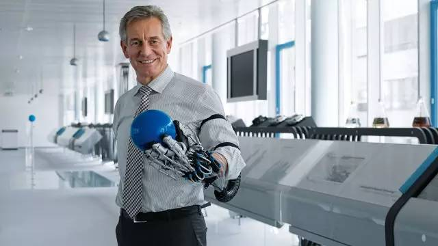
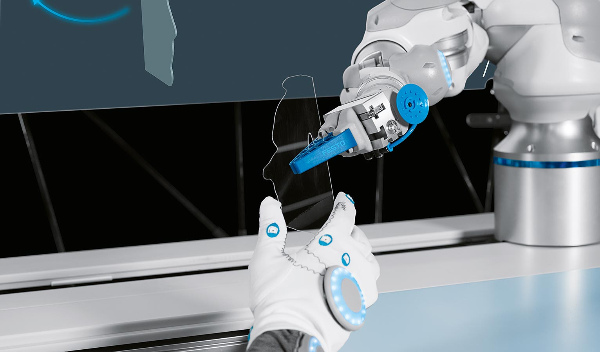
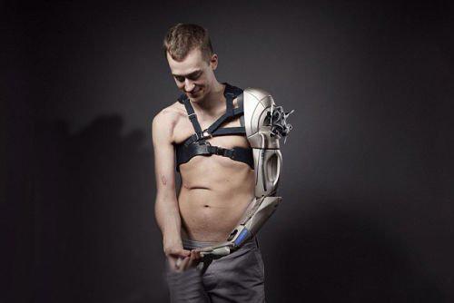
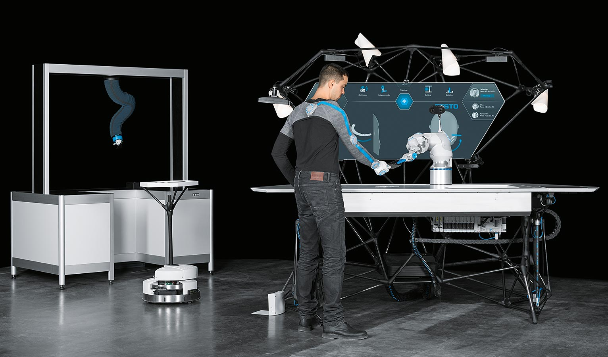

BionicWorkplace
运用人工智能的人机协作
除批量生产外，行业内还存在一种产品个性化的趋势。除了对全部设备进行数字化连通，配备人工智能与机器人的自适应系统在个性化小批量生产中同样发挥着重要作用，它们能与操作员紧密合作。
在BionicWorkplace中，以上所有要求都被整合进一个具有前瞻性的工作环境里。

BionicCobot：模拟人类运动模式的机器人手臂
上述工作环境的核心组成部分是BionicCobot。从解剖学构造来说，气动轻型机器人模拟了人类的手臂。它可以像人类手臂一样既灵活又灵敏地移动，从而解决许多任务。由于它的灵活性与直观的
可操作性，BionicCobot能够直接且安全地与操作人员进行合作。在单调的作业过程中，BionicCobot能够协助工作人员，并代替他们完成一些对人类而言有风险的操作。
直观的操控理念实现安全交互
在BionicWorkplace中，仿生机器人手臂与众多彼此连接互通的辅助系统以及外围设备共同协作。同时，人工智能和机器学习法使BionicWorkplace成为一个累积增大的自适应系统，
能持续对自身进行优化。
整个工作场所的设计符合人体工程学，甚至照明都根据工作人员的需要进行了个性化调整。机器操作员的视野正中间是一张巨大的投影屏。它为操作员提供所有重要信息，还可通过调整显示内容对各
项要求作出动态响应。投影屏四周安装了不同的传感器与摄像系统，可持续稳定地检测操作员、零部件、以及工具的位置。因此，操作员可直接与BionicCobot合作，并可通过移动、触摸、
或语言指令对其进行控制。

借助可穿戴设备检测操作员位置
通过操作员穿戴的特殊工作服，系统能够识别他本人以及他的动作。这些所谓的可穿戴设备由一件装有惯性传感器的长袖上衣与一双内置红外线标记的工作手套组成。借助传感器检测到的数据，
BionicCobot能够将物品精确地传递给操作员，并在必要时精准地避开他——这对人机间的直接合作而言是一个至关重要的前提。
机器学习优化工作进程
智能化软件可同时处理所有摄像机图像、位置数据、以及各种外围设备的输入信号。从以上信息中，软件能够推算出最佳的程序运行过程。随后，系统会将任务妥善分配至机器人与其他工具
，以便它们能以最佳方式协助操作员进行工作。
每解决一项任务，系统都能学习吸收新的知识。由此便产生了一个可以不断扩充的所谓的语义地图。沿着网络路径，存储算法持续得出动态结论。故而，设备从一种受操控的、经过编程的
、固定的运行方式逐渐转化为一种本质而言更自由的工作模式。

通过虚拟现实眼镜实现远程控制
直观操控理念中的另一个要素是远程控制。为此，一台三维立体摄影机需要180度覆盖把控整片工作区域。与此同时，分散在各处的操作员除了身着衣物型可穿戴设备外，还佩戴着虚
拟现实眼镜。有了这幅眼镜，操作员可实时调取并跟踪摄影机捕捉的图像。如此一来，即便操作员分散在各处、或与机器保持安全距离，他们也可对机器人进行操控。
已习得的知识模块在全球范围内均可使用
通过自适应的智能化工作场所，如BionicWorkplace，加上对多功能型工具的使用，未来的人机协作将会更加直观、更易于操作、更高效。已习得的知识模块和新技能可被不受限制
地广泛分享，且在全球范围内均可使用。因此，未来有可能将工作场所建造成一种全球范围内互联互通的复合体，并依照当地个性化的任务与客户需求分别作出适应性调整。

在未来前景中，将整合机器人制造技术的所有基本要素：BionicWorkplace与BionicMotionRobot以及一个Robotino®机器人相互配合。